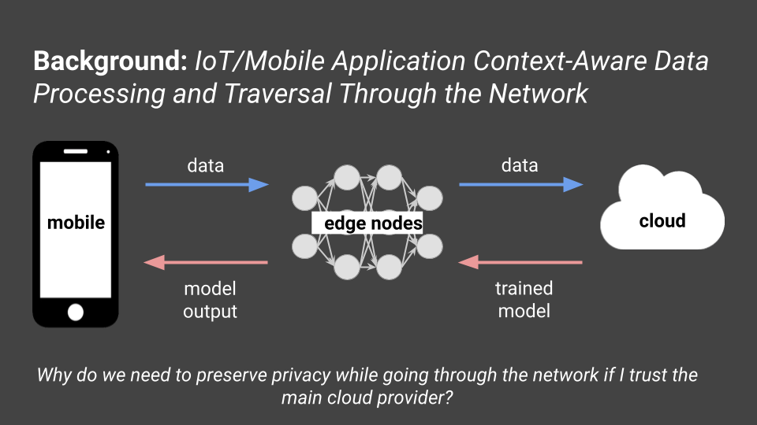
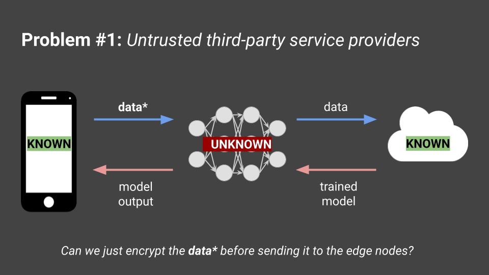

Here's a post about the Undergraduate Research Volunteer (URV) program that CICS held during winter session of 2022/23. This was my first research experience, so I wanted to summarize what I did throughout the weeks of the program in this post. The Undergraduate Research Volunteer (URV) program is an opportunity that the UMass College of Information and Computer Science provides to undergraduate students in the college to explore some sort of research under the guidance of a PhD mentor. The topics generally were under machine learning, data science, natural language processing, data collection and statistical analysis, etc.
I got into the program and attended the kick-off meeting/information session at the very beginning of winter session. The program itself is 6.5 weeks long, began December 20 2022, and ended February 3 2023. We learned that only 35 applicants were selected out of the 88 who applied. My group consisted of three members other than myself and our PhD mentor.
We met with our group and our PhD mentor gave us a general overview of what her personal research deals with, what our project proposal would be, and what would be expected from us in the next few weeks. My group specifically researched under UMass CICS's LASS: Laboratory for Advanced System Software. The following information in this blogpost will detail the part of our project that I worked on.
Our problem statement involved enabling trust on untrusted edges/edge nodes. Most mobile applications are distributed, which means that the components of the application are split across different aspects: front-end, back-end, and edge nodes.
The front-end could be hosted on the device itself, and the back-end could be hosted on some cloud/big data center for large applications or some server/database for smaller applications. Edge nodes, or edge computing, are smaller servers located near the end device. "Edge" could mean some edge device or some mini cloud or cluster that is near your location. Our research focused on the latter definition of edge here. Most, if not all, applications use context-aware data processing where they store temporal, spatial, personal, etc. data such as geolocation. Because of these context-aware applications, they tend to use machine learning for specific tasks (i.e. using machine learning with user data to either train the ML model or to get some inference with an existing model to give recommendations/predictions for you -- aka predictive analytics). To train these models, we need to get data from many users, train some general model, and recognize patterns that the user showcases every time the applications provides some service to a user. The ML model can output according to these patterns. The traditional method of training these types of ML models is via various queries to the cloud which happens on the device (i.e. facial recognition trains on the device itself since it's a smaller model of just one user's data).
There is one big problem in sending data over the network and training on it. Since our models are trained on the cloud which tends to be far away, we need the user to make queries to edge providers instead of the cloud directly. So, our first question is: Why do we need to preserve privacy while going through the network if I trust the main cloud provider?
Users may trust big cloud providers such as Meta, but they may not necessarily trust third-party edge provider companies that they have to send their data to. There may be malicious actors in these third-party edge provider companies that big cloud providers use. This problem statement sounds like it could be solved with some sort of encryption of the data before it reaches the edge nodes, so should we just do that?
It turns out that the topic of encryption brings up a second problem: intense computation localization. There have been efforts to do safe encryption that does not involve the receiver (in this case, the edge nodes or the cloud provider themselves) decrypting the information. This method is called fully-homomorphic encryption, and allows for receivers to receive encrypted information, perform mathematical operations on it, and send it back to the original sender with no information leakage (Source). This type of encryption, however, is incredibly computationally intensive (Source). Since the devices we're targeting in this research deals with IoT devices, which are typically very small scale and cannot use too much energy in an efficient way, there is no way to feasibly do all encryption on the sender's side prior to reaching edge nodes.
Our proposed work was to modify the data that users send in a way to preserve privacy, allow for ML models to use that data instead of the raw data, and allow edge nodes to have access to the ML model but not the raw information -- a solution similar to what fully-homomorphic encryption could have provided.
After determining our problem statement and project proposal, I started doing a literature review. Specifically, we were looking for papers that talked about how to allow users to modify data to be privacy preserving and how to enable ML models to use modified data on the edge (this should preserve utility so original data cannot be inverted or reconstructed). After finding each paper, I annotated them and added a quick summary for each one of topical content in our research notebook. Here are some of the papers that I found that you can read for your own leisure:
Now we can start finding a potential solution to the two problems we found earlier. To solve problem 1, untrusted third-party providers, we want to use some sort of ML model that preserves user privacy from potentially malicious third-party providers. To solve problem 2, the intense computation localization that comes with encryption methods like fully-homomorphic encryption, we want to create a model that does not use expensive privacy-preserving methods and/or create a model that diverts some computational power from the IoT device.
This is our proposed solution for these two problems. To help preserve privacy, we add noise to each of the data coming from the IoT devices before it gets to the edge node (labeled server in the diagram). To help divert some of the computational overhead, we cut the model and train half on the IoT devices, send the input labels and activation problems to the edge node, and let the edge node continue training the rest of the model. We also divert some of the computation on each IoT device to other IoT devices accessing the same network. This is a good start, and now we need to figure out a dataset for training this and testing this method. Based on the dataset chosen, we also need to choose which type of ML model to pick.
For many context-aware applications, they use time-series data, which is data that is recorded over a consistent interval of time. For example, if your IoT device was a FitBit, you'd want to track how many steps that you took in a day every day or what your running pace was while on a jog.
We decided on implementing an LSTM model. LSTM stands for long-short term memory, which is a type of recurrent neural network (RNN) that is effective in processing time-series data. It deals with the vanishing and exploding gradient problem when training RNNs, and can process point data as well as sequential data without relation to points in previous steps.
We knew we wanted to use LSTM-SPLIT as our RNN, so we looked at tutorials on how to write a RNN for LSTM, using packages like Python's
We ended up using tutorials like this one, and worked on incorporating the "split" portion into this existing tutorial. We also researched how to add different types of noise (i.e. LaPlacian, Gaussian...) to this LSTM tutorial. I found many different existing GitHub repositories that aimed to add specific types of noise we were looking for to ensure differential privacy. Our model essentially worked like this:
When resolving the two major problems that we had in our problem statement, it seemed like any of the noise addition methods I used (Gaussian, Random, etc.) would have approximately the same accuracy when evaluated after the model training on the data (~90%) and thus are relatively privacy-preserving. In regards to our other problem, we measured the latency and our LSTM-SPLIT model does not increase much with or without the noise addition. So, this noise addition method is an effective way to not increase computational overload on the IoT device.
This research opportunity was very fun! In February, we had our URV poster sessions where each group was able to showcase their findings and research. The pictures from the event can be found here, and here is a blurb that CICS wrote about the event in the CICS weekly newsletter:
The Undergraduate Research Volunteers (URV) finale and poster session was held last week. URV matches computer science undergraduates with a doctoral student mentor to explore research projects and network with students and faculty. Nine teams presented research posters from seven CICS labs.
After finishing this project, I realized that it would be possible to de-noise the data with just the method we decided to use. It would be more interesting to utilize newer technologies or other models to do the same privacy-preserving we attempted to do in this research. I learned about normalizing flow models in my last semester of college - a full year after conducting this initial research. Normalizing flows are deterministic and both the processes that control the forward and backward flows can be inverted to become the other (Source). This is not ideal, since it would be very easily to obtain the original data the ML model is trained on by simply reversing the trained process. It would be interesting to use something that would easily be reversed only by the sender so that no private data is realized by malicious actors, but I would need to do more research into other techniques to do this.
Additionally, during the literature review process, I also stumbled upon the concept of differential privacy which acts as a numerical metric of privacy protection. In the future, I'd like to incorporate this into the research.